화공기사(구)(구) (2003-08-31 기출문제)
1과목: 화공열역학
1. Van der Waals식을 이용하여 실제기체의
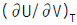
를 구한 결과로서 맞는 것은?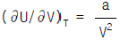
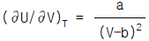
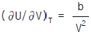
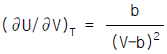
(정답률: 알수없음)

2. 열역학 법칙에 관한 설명 중 틀린 것은?
- 계의 총괄에너지 변화에 외계의 총괄에너지 변화를 더하면 영이 된다.
- 에너지는 여러 가지 형태를 가질 수 있지만 총괄에너지의 총량은 일정하다.
- 어떠한 순환과정에 의해서도 계가 흡수한 열을 완전히 일로 변환시키는 것은 불가능하다.
- 가역단열과정에서 계의 엔트로피 변화는 항상 양의 값을 갖는다.
(정답률: 알수없음)
3. 화학반응에서 정방향으로 반응이 계속 일어나는 경우는? (단, Δ G는 Gibbs free energy 변화임)
- Δ G = Kc
- Δ G = 0
- Δ G > 0
- Δ G < 0
(정답률: 알수없음)
4. 수증기 3㎏mole 이 2㎏/㎝2, 290℃의 상태하에서 10㎏/㎝2까지 등온 압축하는데 제거하여야 할 열량은 몇㎉인가? (단, 처음 상태의 S1 = 1.9645㎉/㎏, 최종상태의 S2 =1.7038㎉/㎏이다.)
- -6927.2
- -7927.2
- -8927.2
- -9729.2
(정답률: 알수없음)
5. 어떤 연료의 발열량이 10000㎉/㎏일때 이 연료 1㎏이 연소해서 30%가 유용한 일로 바뀔수 있다면 500㎏의 무게를 올릴 수 있는 높이는 약 얼마인가?
- 25m
- 250m
- 2.5㎞
- 25㎞
(정답률: 알수없음)
6. 내부 에너지 10㎉, 압력이 1atm,부피가 1m3인 계의 엔탈피는?
- 10㎉
- 14㎉
- 24㎉
- 34㎉
(정답률: 알수없음)
7. 열용량이 Cp인 물질이 정압하에서 온도 T1에서 T2까지 변화할 때 엔트로피(Entropy)변화량은?
- Cp(T2-T1)
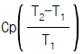
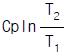
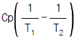
(정답률: 알수없음)
8. 다음의 각 냉동 사이클 가운데 1 냉동톤당 냉동제의 순환량이 가장 적게 필요한 것은?
- Carnot 냉동 사이클
- 공기 냉동 사이클
- 증기-압축냉동 사이클(팽창 밸브 설치)
- 증기-압축냉동 사이클(팽창 엔진 설치)
(정답률: 알수없음)
9. 어떤 유체가 장치속으로 1.8㎞/min의 유속으로 들어간다. 이 유체가 장치를 어떤 속도로 떠나야 들어가고 나갈때의 운동에너지의 차가 그 유체의 1㎉/㎏에 해당하겠는가?
- 5.76㎞/min
- 6.24㎞/min
- 9.63㎞/min
- 11.57㎞/min
(정답률: 알수없음)
10. 이상용액에 대한 설명 중 틀린 것은?
- 혼합에 따른 엔탈피 및 엔트로피의 변화가 없다.
- 모든 농도범위에서 Lewis-Randall법칙이 성립된다.
- 용액중 한 성분의 부분 몰용적은 그 성분이 순수한 상태에서 갖는 몰용적과 같다.
- 용액속에서의 분자간의 인력은 서로 같은 분자간의 인력이나 서로 다른 분자간의 인력이 모두 같다.
(정답률: 알수없음)
11. Diesel기관과 Otto기관의 차이점에 관한 설명 중 틀린 것은?
- Diesel기관이 Otto기관보다 압축과정에서의 온도가 충분히 높아서 연소가 자발적으로 시작한다.
- 같은 압축비를 사용하면 Otto기관이 Diesel기관보다 효율이 높다.
- Diesel기관은 Otto기관보다 미리 점화하게 되므로 얻을 수 있는 압축비에 한계가 있다.
- Diesel기관은 연소공정이 거의 일정한 압력에서 일어날 수 있도록 서서히 연료를 주입한다.
(정답률: 알수없음)
12. Van der Waals 식에 따르는 1 몰의 기체를 17℃ 의 온도에서 등온가역과정으로 20 L에서 10 L로 압축할 때의 일은 몇 J 인가? (단, Van der Waals 식은 아래와 같이 표시된다.
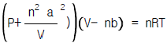
이 때 a = 4 L2/atm-mol2, b = 0.027 L/mol, R = 8.314J/mol-K, 1 atm-Lr = 101.3 J )- 1654.24 J
- -1654.24 J
- 1694.76 J
- -1694.76 J
(정답률: 알수없음)
13. C(s) + O2(g) → CO2(g) : △H1 = -94⑤0 kcal/kmolㆍCO2CO(g)+1/2 O2(g) → CO2(g):△H2 = -67640 kcal/kmolㆍCO2 위와 같은 반응을 알고 있을 때 다음 반응열은 얼마인가?
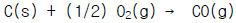
- -37025 kcal/kmolㆍCO2
- -26410 kcal/kmolㆍCO2
- -74⑤0 kcal/kmolㆍCO2
- +26410 kcal/kmolㆍCO2
(정답률: 알수없음)
14. 어떤 계가 단일 초기평형상태에서 두 개의 과정으로, 하나는 가역적으로 다른 하나는 비가역적으로 똑같은 최종 평형상태로 변한다. 이들 과정의 △S가 계에 어떻게 관계 하는가?
- △Sirr = △Srev.
- △Sirr > △Srev.
- △Sirr < △Srev.
- 알 수 없다.
(정답률: 알수없음)
15. 1 mole의 이상기체가 등온하에서 10 atm에서 1 atm로 팽창된 때의 entropy의 변화는 몇㎈/gㆍ㏖ K인가?
- 1.57
- 2.57
- 3.57
- 4.57
(정답률: 알수없음)
16. 다음 중에서 같은 환산온도와 환산압력에서 압축인자가 가장 비슷한 것끼리 짝지워진 것은?
- 아르곤-크립톤
- 산소-질소
- 수소-헬륨
- 메탄-프로판
(정답률: 알수없음)
17. 다음 중 열역학 제1법칙을 옳게 표현한 것은?
- 위치에너지와 운동에너지는 서로 반비례한다.
- 이상기체에만 적용되는 법칙이다.
- 엔트로피의 증가원리를 표현한 법칙이다.
- 에너지보존 법칙을 표현한 법칙이다.
(정답률: 알수없음)
18. 일정온도와 일정압력에서 일어나는 화학반응의 평형판정 기준을 옳게 표현한 식은? (단, △는 반응물과 생성물의 관련성질 변화량이며, 아래첨자 tot은 총변화량을 나타내며, G = 깁스 자유에너지, H = 엔탈피이다.)
- (ΔGtot)T,P = 0
- (ΔHtot)T,P > 0
- (ΔGtot)T,P < 0
- (ΔHtot)T,P= 0
(정답률: 알수없음)
19. 어떤 화학반응에 대한 Δ S° 는 Δ H° = Δ G° 인 온도에서 어떤 값을 갖겠는가?
- Δ S° > 0
- Δ S° < 0
- Δ S° = 0
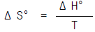
(정답률: 알수없음)
20. 어떤 기체가 Joule Thomson Inversion point가 될수 있는 조건은?(단,
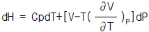
이다.)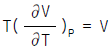
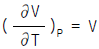
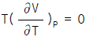
- dH = 0
(정답률: 알수없음)
2과목: 화학공업양론
21. 다음은 수평도관의 흐름을 해석하는데 적용되는 기계적 에너지 수지식의 설명이다. 틀린 것은?
- 마찰손실은 에너지수지가 성립하기 위해 보충해주는 에너지양이다.
- 마찰손실이 증가하면 속도수두의 변화도 증가한다.
- 마찰손실이 감소하면 압력강하도 증가한다.
- 마찰손실이 증가하면 위치에너지 변화는 감소한다.
(정답률: 알수없음)
22. 현재 전세계 에너지 소비율이 (energy consumption rate)이 7.1× 1012 W 라고 한다면, 이 양은 매년 몇 칼로리씩 소모되는 양인가?(단, 4.2J/cal 이다.)
- 2.2× 1020cal/year
- 5.3× 1019cal/year
- 3.2× 1019cal/year
- 4.3× 1020cal/year
(정답률: 알수없음)
23. 임계상태의 설명중 맞는 것은?
- 임계온도는 기상이 액상으로 바뀔 수 있는 최소 온도이다.
- 임계압력은 기상이 액상으로 바뀔 수 있는 최대 압력이다.
- 임계점에서 체적에 대한 압력의 이분값이 존재하지 않는다.
- 기상거동이 액상거동에 근접해 있는 상태이다.
(정답률: 알수없음)
24. 단일 증류탑을 이용하여 폐처리된 에탄올 25mol%와 물 75mol%의 혼합액 50kg mol/hr을 증류하여 85mol%의 에탄올을 회수해서 공정에 재사용하고, 나머지 잔액은 3mol%의 에탄올이 함유된 상태로 폐수처리 시키고자한다. 이 같은 증류탑을 통해 혼합액 중에 몇 %에 해당하는 양이 증류공정을 통해 회수가 되겠는가?
- 85%
- 88%
- 91%
- 93%
(정답률: 알수없음)
25. 모터로 무게 900N인 벽돌짐을 30초내에 15m올리려 한다. 모터가 필요로 하는 최소한의 일률은?
- 250W
- 350W
- 450W
- 550W
(정답률: 알수없음)
26. 포스겐가스를 만들기 위하여 CO가스 1.2몰(㏖)과 Cl2가스 1몰을 다음 반응식과 같이 촉매하에서 반응시킨다. 이 때 전환율이 90%이라면 반응후 총 몰수는?
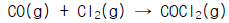
- 1.2몰
- 1.1몰
- 1.3몰
- 1.4몰
(정답률: 알수없음)
27. 이상기체라고 가정할 때 단열공정(adiabatic process)에 대한 P-V-T(압력-부피-온도)의 관계가 올바른 것은? [단, k = (Cp/Cv)이다.]
- T2/T1 = (V1V2)K-1
- T2/T1 = (P2P1)K-1
- T2/T1 = (P2P1)(K-1)/K
- T2/T1 = (V1V2)(K-1)/K
(정답률: 알수없음)
28. 평균 열용량이 CP인 이상기체를 T1에서 T2까지 일정압력과 일정용적에서 가열할 때 열용량 사이의 관계는?
- Δ U = dE - d(PV)
- CVΔ t = (Cp-R)Δ t
- Δ U = CVΔ t - W
- Δ U = RΔ T
(정답률: 알수없음)
29. 압축계수 Z는 이상기체 법칙에서 PV=ZNRT로 놓아서 정의된 계수로 옳은 것은?
- Z는 이상기체의 경우 1이다.
- Z는 실제기체의 경우 1이다.
- 일반화시킨 즉 환산연수로는 정의할 수 없다.
- Z는 그의 단위가 R값의 역수이다.
(정답률: 알수없음)
30. 벤젠의 표준 총 발열량(고발열량)은 -780980㎈/g-㏖이고, 표준 진발열량(저발열량)은 -749423㎈/g-㏖이다. 이 때 물의 증발 잠열은?
- -1530403㎈/g-㏖
- 31557㎈/g-㏖
- 1⑤19㎈/g-㏖
- 1530403㎈/g-㏖
(정답률: 알수없음)
31. 비엔탈피의 설명 중 틀린 것은?
- 물질의 열역학적 상태변화를 규정짓는 특성치이다.
- 비엔탈피변화는 비내부에너지, 압력 및 비용에 의해 결정된다.
- 비엔탈피변화는 일반적으로 일정압력하의 열용량과 온도차에 의해 결정된다.
- 비엔탈피변화는 일반적으로 일정부피하의 열용량과 온도차에 의해 결정된다.
(정답률: 알수없음)
32. 다음 중 이상기체 상수 R 에 해당하는 값은?
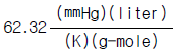
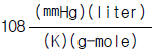
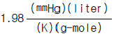
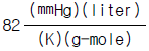
(정답률: 알수없음)
33. 연속 정류탑에 의하여 알코올을 정류한다. feed의 농도는 35% EtOH이고 탑상 유출물은 85% EtOH, 탑저에서 5% EtOH로 분류한다면, feed 1㎏당 탑상 유출물의 ㎏수는?
- 0.215
- 0.375
- 0.450
- 0.530
(정답률: 알수없음)
34. 다음 중 에너지 단위는?
- Paㆍm3
- Watt
- N/m2
- Joule/s
(정답률: 알수없음)
35. 18℃의 물 500g을 80℃로 온도를 높이는데 발열량 5200㎉/m3의 기체 연료 12L가 소비되었다. 연료가 완전히 연소하였다면 열손실은?
- 25.2 %
- 30.2 %
- 50.3 %
- 70.5 %
(정답률: 알수없음)
36. 암모니아 합성 공정의 조작에서 1:3의 N2, H2 혼합물을 반응기에 급송하였더니 30%가 NH3 로 변환하였다. 생성한 NH3는 응축시켜 분리하고 미반응 기체는 반응기로 재순환을 시켰다. 처음 N2-H2 혼합물은 100 에 대하여 0.2비로 Ar을 포함하고 있다. 반응기에 들어가는 Ar의 허용한도는 N2-H2 100 용적에 대하여 5 라고 한다면 제거해야 할 순환율의 분율은 얼마인가?
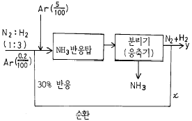
- 0.013
- 0.23
- 2.24
- 25.4
(정답률: 알수없음)
37. 몰 증발잠열을 구할 수 있는 방법중 두가지 물질의 증기압을 동일 온도에서 비교하여 대수좌표에 나타낸 것은?
- Duhring plot
- Othmer plot
- Cox chart
- Watson plot
(정답률: 알수없음)
38. 카르노(carnot)기관이 열을 고열원에서 125kcal를 받고 저열원에서 75kcal를 배출할 때, 이 열기관의 효율은?
- 20%
- 30%
- 40%
- 50%
(정답률: 알수없음)
39. 화학공정을 통해 얻어진 자료가 연속적인 변수값을 나타낸다. 자료해석을 위해 평균값을 계산하려고 하는데 다음중 어떤 유형의 평균값을 이용하는 것이 가장 바람직하겠는가?
- 가중평균
- 기하평균
- 대수평균
- 산술평균
(정답률: 알수없음)
40. 다음식은 Van der Waals의 실존기체의 상태식으로 제안된식이다. 이 식에서 a의 단위는 다음 어느 것인가?
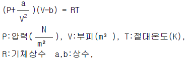
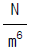
- Nㆍm2
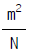
- Nㆍm4
(정답률: 알수없음)
3과목: 단위조작
41. 장치설계에서 이론단수(theoretical stage)가 의미하는 것은?
- 평형이 이루어지는 수
- 조작회수
- 처리하는 회수
- 탑의 실제단수
(정답률: 알수없음)
42. 내경이 10㎝인 곧은 pipe 속으로 유체가 도입된다. 이 유체의 NRe가 2,000일 때 전이길이(transition length)는?
- 5m
- 10m
- 15m
- 20m
(정답률: 알수없음)
43. 순수한 물 20℃의 점도는?
- 1[g/㎝ㆍsec]
- 1[cP]
- 1[Paㆍs]
- 1[㎏/mㆍsec ]
(정답률: 알수없음)
44. absorption factor method를 이용하여 이상단수를 구할 수 있는 경우는?
- 조작선이 직선이면 평형선이 직선이 아니라도 구할 수 있다.
- 조작선이 직선이 아니라도 평형선이 직선이면 된다.
- 조작선과 평형선이 직선이어야 한다.
- 조작선과 평형선에 관계없이 공급선이 직선이면 된다
(정답률: 알수없음)
45. 가열된 평판위로 Prandtl 수가 1보다 큰 액체가 흐를 때 수력학적 경계층 두께δ h와 열전달 경계층 두께 δ T와의 관계로 옳은 것은?
- δ h＞δ T
- δ h＜δ T
- δ h=δ T
- Prandtl 수 만으로는 알 수 없다.
(정답률: 알수없음)
46. 다음 중 Nusselt Number는? (단, h:전열계수, D:지름, k:열전도도, ρ :밀도, Cp:비열, ν :동점도, α :열확산도)
- hD/k
- k/ρ Cp
- ν /α
- ν /D
(정답률: 알수없음)
47. plait point 에 대한 설명으로 옳지 않은 것은?
- 이 점에서 2 상이 1 상이 된다.
- 이 점에서는 추출이 불가능하다.
- Tie line 의 길이가 0 이다.
- 이 점을 경계로 추제성분이 많은 쪽이 추잔상이다.
(정답률: 알수없음)
48. 천연가스를 상온 상압에서 300 m3/min 를 파이프로 통하여 수송한다. 이 조건에서 공정 파이프 라인(line) 의 최적 유속이 2 m/sec 라고 하면 사용관의 최적 직경은?
- 1.4(m)
- 1.8(m)
- 2.1(m)
- 2.5(m)
(정답률: 알수없음)
49. 어떤 냉장고가 내면 1/2인치의 송판 중간에 4인치의 코르크판 그리고 외면은 3인치의 콘크리트 구조로 되어 있다. 냉장고 내벽의 온도는 255K이고, 외벽의 온도는 297K이다. 송판의 열전도도(K)는 0.15, 코르크판의 열전도도(K)는 0.04, 그리고 콘크리트의 열전도도(K)는 0.762W/mㆍK이다. 이 때 1m2에 대한 열손실(W)은?
- 1.541(W)
- 15.41(W)
- 154.1(W)
- 1541(W)
(정답률: 알수없음)
50. 흡수탑에서 액체 체류량이 증가하기 시작하는 점을 의미하는 것은?
- flooding point(왕일점)
- loading point(부하점)
- channeling(편통)
- entrainment(비말동반)
(정답률: 알수없음)
51. 3중 효용 증발기에서 첫번 효용 증발기에 들어가는 수증기의 온도가 230℉ 이고, 맨끝 효용기의 비점이 145℉ 이다. 각 효용기의 총괄 전열계수가 각각 500, 400, 200Btu/ft2ㆍhrㆍ℉ 일 때 제1 효용기에서의 비점은 얼마인가?(단, 비점 상승은 무시한다.)
- 165.1℉
- 180.1℉
- 202.1℉
- 212.1℉
(정답률: 알수없음)
52. Momentum flux(운동량 流速)에 대한 표현으로 옳지 않은 것은?
- Mass flux와 선속도의 곱이다.
- 밀도와 Mass flux와의 곱이다.
- 밀도와 선속도 자승의 곱이다.
- Mass flow rate와 선속도의 곱을 단면적으로 나눈 것이다.
(정답률: 알수없음)
53. 같은 용적, 같은 압력하에 있는 같은 온도의 두 기체 A와 B의 몰수는 어떤 관계인가?
- 같다
- 다르다
- A = 2B
- B = 2A
(정답률: 알수없음)
54. 증발관내에서 포말생성의 예방과 관계가 없는 것은?
- 액체를 가열표면까지 올려서 가열로 파괴한다.
- 수증기를 분출하여 파괴한다.
- 피마자유, 식물유 등을 첨가해서 억제한다.
- 증발관 상부에 큰 공간을 둔다.
(정답률: 알수없음)
55. 50㎏/hr의 물을 10℃에서 75℃까지 가열하려고 170℃의 연도가스 200㎏/hr를 병류로 흐르게 하였다. 연도가스의 비열이 0.25kcal/kg℃, 총괄전열계수가 100㎉/hr m2℃일 때 소요 전열면적은 몇 m2인가?
- 0.42
- 0.84
- 1.26
- 1.68
(정답률: 알수없음)
56. 다음 중 이동단위높이(HTU)를 구할 수 있는 것은?
- 물질전달계수와 질량속도로 부터
- 평행선의 기울기로 부터
- 탑내농도 변화로 부터
- 조작선의 기울기로 부터
(정답률: 알수없음)
57. Fick의 법칙에 대한 설명으로 옳은 것은?
- 확산 속도는 농도 구배 및 면적에 반비례한다.
- 확산 속도는 농도 구배에 비례하고, 면적에 비례한다
- 확산 속도는 압력에 반비례하고, 절대온도에 비례한다.
- 확산 속도는 압력에 비례하고, 면적에 비례한다.
(정답률: 알수없음)
58. 추출에서는 3성분계로 추질 a 를 포함하는 용액(추료) b를 용매 S 로서 추출하면 서로 혼합되지 않는 두 상, 즉 추출액과 추잔액의 두 층으로 나뉜다. 이 평형계는 3 상이 서로 용존해 있으므로 그림과 같이 삼각좌표를 사용한다. 점 P 에서의 용매 S 의 성분은?
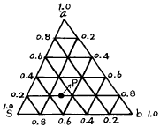
- 60 %
- 50 %
- 30 %
- 20 %
(정답률: 알수없음)
59. 기체의 증습원리에 어긋나는 것은?
- 기체중의 증기를 도입하는 방법
- 기체중에 높은 습도의 기체를 혼입하는 방법
- 기체나 물을 직접 접촉시키는 방법
- 기체를 압축액화시키는 법
(정답률: 알수없음)
60. Hagen - Poiseuille 식과 Fanning 식에 대한 설명으로 옳지 않은 것은?
- 두식 모두 관내의 압력손실을 구하는데 사용될 수 있다.
- Hagen - Poiseuille 식은 관내의 유체가 층류인 경우에만 유용하다.
- Fanning 식은 관내의 유체가 난류인 경우에만 유용하다.
- Fanning 식은 마찰계수를 사용하여 압력손실을 계산한다.
(정답률: 알수없음)
4과목: 반응공학
61. A→ R 인 반응이 체적 V = 0.⑤ℓ 인 플러그흐름 반응기에서 일어날 때 반응 속도식은
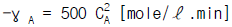
이다. CAO = 0.01mole/ℓ 이고 공급 속도가 0.⑤ℓ /min이라면 전환율은?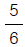
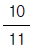
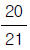
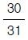
(정답률: 알수없음)
62.
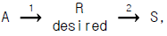
각 경로의 활성화에너지가 E1 < E2 인 경우의 반응에 대한 설명으로 적합한 것은?- 공간시간(τ)이 상관 없다면 가능한 한 최저 온도에서 반응
- 등온 반응에서 τ 값이 주어지면 가능한 한 최고 온도에서 반응
- 온도 변화가 가능하다면 초기에는 낮게 반응이 진행됨에 따라 높게 반응
- 온도 변화가 가능하더라도 최적 등온 조작이 유리
(정답률: 알수없음)
63. N2O2의 1차 반응 속도상수는 0.345/min이고, 초기농도 CAo가 1.6㏖/ℓ이었다면 N2O2의 농도가 0.6㏖/ℓ 될 때까지의 소요시간은?
- 1.81분
- 2.84분
- 3.62분
- 2.33분
(정답률: 알수없음)
64. A + R → R + R인 자기촉매 반응의 시간에 따른 전화율을 잘 나타낸 그림은?
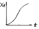
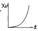
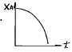
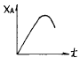
(정답률: 알수없음)
65. 다음 반응에서 CA0 = 1㏖/ℓ, CR0 = CS0 = 0 그리고 속도상수 k1 = k2 = 0.1min-1와 100ℓ/h의 원료유입에서 R을 얻는다고 한다. 이 때 성분 R의 수득률을 최대로 할 수 있는 플러그 흐름 반응기의 크기를 구하면?(단,
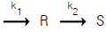
)- 16.67ℓ
- 26.67ℓ
- 36.67ℓ
- 46.67ℓ
(정답률: 알수없음)
66. 크기가 다른 3개의 혼합반응기(mixed flow reactor)를 사용하여 2차 반응에 의해서 제품을 생산하려 한다. 최대의 생산율을 얻기 위한 반응기의 설치 순서로서 옳은 것은?
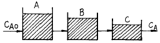
- A → B → C 순서
- B → A → C 순서
- C → B → A 순서
- 순서에 무관
(정답률: 알수없음)
67. CSTR(Continuous Stirred Tank Reactor)의 체류분포 시간을 측정하기 위해서 계단입력과 펄스입력을 이용하였다. 이상유동일 때 다음 중 틀린 것은?
- 계단 입력과 펄스입력의 체류시간 분포는 다르다.
- 계단 입력과 펄스입력의 평균 체류시간은 같다.
- 펄스 입력의 출력곡선은 체류시간 분포와 같다.
- 평균체류 시간은 반응기내의 반응물 부피를 급송량으로 나눈것과 같다.
(정답률: 알수없음)
68. 평균체류 시간이 같은 관형반응기와 혼합반응기에서 A → R(-γ A = kCAn)으로 표시되는 화학반응이 일어날 때 관형반응기의 전화율 XP와 혼합반응기의 전화율 Xm의 비 XP/Xm 이 가장 큰 반응차수는?
- 0차
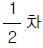
- 1차
- 2차
(정답률: 알수없음)
69. 반응속도 상수 k는 온도 T의 영향을 많이 받는다. lnk와
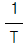
사이의 관계를 바르게 나타낸 그래프는?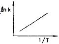
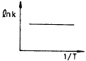
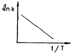
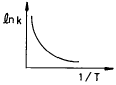
(정답률: 알수없음)
70. 다음 그림은 어떤 균일계 비가역 병렬 반응기에서 순간수율
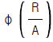
와 반응물의 농도(CA)간의 관계를 나타낸 것이다. 빗금친 부분의 넓이가 뜻하는 것은?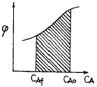
- 총괄 수율 Ф
- 반응하여 없어진 반응물의 몰수
- 반응으로 생긴 R의 몰수
- 반응기를 나오는 R의 농도
(정답률: 알수없음)
71. A→ R 인 액상 1차반응이 등온회분 반응기에서 진행된다. 이 때 액상반응물 A의 70%가 13분만에 전화되었다. 이 조건에서 같은 전화율을 얻기 위해 필요한 PFR에서의 공간시간(space time)은?
- 13(min)
- 16(min)
- 18(min)
- 26(min)
(정답률: 알수없음)
72. 다음은
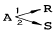
반응의 농도와 시간과의 그림이다. 생성물(生成物) R 을 많이 생기게 하려고 할 때의 반응온도 조건은? (단, E1 은 1의 경로의 활성화에너지, E2는 2의 경로의 활성화에너지이다.)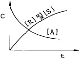
- E1 > E2 때 저온조작
- E1 > E2 때 고온조작
- E1 = E2 때 저온조작
- E1 = E2 때 고온조작
(정답률: 알수없음)
73. 그림과 같은 기초적 반응에 대한 농도 - 시간곡선을 가장 잘 표현하고 있는 반응 형태는?
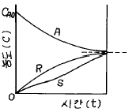
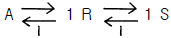
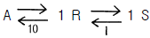
(정답률: 알수없음)
74. 아세트산 에틸의 가수분해는 1차 반응속도식에 따른다고 한다. 만일 어떤 실험조건하에서 정확히 20 % 를 분해시키는데 50 분이 소요 되었다면 반감기는?
- 16.1분
- 31.3분
- 139.2분
- 155.3분
(정답률: 알수없음)
75. 다음 그림은 농도 - 시간의 곡선이다. 옳은 반응식은?
(정답률: 알수없음)
76. Ideal steady state flow reactor 의 종류 중 틀린 것은?
- Mixed flow reactor
- Plug flow reactor
- Piston flow reactor
- Batch reactor
(정답률: 알수없음)
77. 이상기체 반응물 A 가 1 L/sec 속도로 체적 1 L 의혼합 반응기에 공급되어 50 % 가 반응 된다. 나가는 속도는 2 L/sec, 반응식이 A → 3R 일 때 일정온도 압력하에서 반응물 A 의 평균 체류시간(mean residence time)은 몇 초 인가?
- 0.5
- 1.0
- 1.5
- 2.0
(정답률: 알수없음)
78. A → R인 반응에 대하여 동일한 반응 조건에서 정촉매를 사용하였을 때의 반응속도상수 Kpc와 촉매를 사용하지 않았을 때의 Kp 사이의 관계는?
- Kp > Kpc
- Kp < Kpc
- Kp = Kpc
- 알수없다.
(정답률: 알수없음)
79. 다음과 같은 식에서 (원하는 생성물) R을 원하는 생성물이라고 하면 다음 중 옳은 방법은?
- E1 > E2면 저온으로 함
- E1 < E2면 고온으로 함
- 을 크게 함
- 을 적게 함
(정답률: 알수없음)
80. 반응물 A가 다음의 평행 반응으로 반응한다. 이에 대한 설명으로 옳은 것은? (단, 이 때 R,은 목적하는 생성물, S는 목적하지 않는 생성물이다.)
- a1 > a2일 때, 회분식 반응기나 플러그 흐름 반응기가 유리하다.
- a1 = a2일 때, 반응물 A의 농도가 낮은 것이 좋다.
- a1 = a2일 때, 반응기의 크기에 영향을 받지 않는다.
- a1 < a2일 때, 반응기의 형태에 영향을 받지 않는다.
(정답률: 알수없음)
5과목: 공정제어
81. 다음 기계식 압력계 가운데서 탄성 압력계는?
- 벨로우스식
- 환상 천칭식
- 피스톤 압력계
- 2액마노미터
(정답률: 알수없음)
82. 반응속도 상수의 온도의 조성은 다음의 아레니우스(Arrhenius)식으로 표현된다. 정상상태 온도 TS에서 선형화 시킨 K의 표현으로 타당한 것은?
(정답률: 알수없음)
83. 시간상수 τ 가 0.1분이고, 게인 Kp가 1인 온도계가 초기에 90℃를 유지하고 있다. 이 온도계를 100℃의 물속에 넣었을때 온도계 읽음이 98℃가 되는데 걸리는 시간은 얼마인가?
- 0.082분
- 0.124분
- 0.161분
- 0.216분
(정답률: 알수없음)
84. 다음 미분방정식 해의 라플라스 함수는?
(정답률: 알수없음)
85. 어떤 압력측정장치의 측정범위는 0∼400 psig, 출력범위는 4∼20 mA로 조정되어 있다. 이 장치의 이득을 구하면 얼마인가?
- 0.01 mA/psig
- 25 mA/psig
- 0.08 mA/psig
- 0.04 mA/psig
(정답률: 알수없음)
86. 인 2차계의 단위계단 응답시 %over shoot 및 최대값은?
- over shoot = 20.7%, 최대값 = 1.207
- over shoot = 25.4%, 최대값 = 1.254
- over shoot = 30.7%, 최대값 = 1.307
- over shoot = 35.4%, 최대값 = 1.354
(정답률: 알수없음)
87. 다음 중 계단입력에 대한 공정출력이 가장 느리게 움직이는 것은?
(정답률: 알수없음)
88. 폐회로제어계(Closed -Loop Control System)를 설명한 것은 ?
- 부정확하고 신뢰성은 적으나 설치비가 저렴
- 순차제어(Sequence Control)라고도 하며,기기에 의한 희망조건의 유지및 변화제어
- 출력신호가 귀환요소를 통하여 입력측으로 귀환된 후 그 오차를 검출하여 제어하는 계
- 되먹임제어(Feedback Control)라고도 하며 제어계의 출력과 입력이 서로 독립적인 제어계
(정답률: 알수없음)
89. 선형계의 안정성을 판별하기 위한 특성방정식이 올바로 표기된 것은?
- 1 + 닫힌 루프 전달함수 = 0
- 1 - 닫힌 루프 전달함수 = 0
- 1 + 열린 루프 전달함수 = 0
- 1 - 열린 루프 전달함수 = 0
(정답률: 알수없음)
90. 다음의 제어방식중 잔류편차(off - set)는 존재하나 최종값에 도달시간을 단축시킬수 있는 제어방식은?
- P형
- PI형
- PD형
- PID형
(정답률: 알수없음)
91. 다음 그림의 블록선도에서 총괄 전달함수가 옳은 것은?
(정답률: 알수없음)
92. 다음의 함수를 라플라스로 전환한 것으로 맞는 것은?
(정답률: 알수없음)
93. 개회로 전달함수(open -loop transfer function) 인 계(系)에 있어서 Kc가 4.41인 경우 특정방정식은?
- S3 + 7S2 + 14S + 76.5 = 0
- S3 + 5S2 + 12S + 4.4 = 0
- S3 + 4S2 + 10S + 10.41 = 0
- S3 + 6S2 + 11S + 32.5 = 0
(정답률: 알수없음)
94. 어떤 1차계의 전달함수는 1/(2s+1) 로 주어진다. 이제 크기 1, 지속시간 1인 펄스입력변수가 도입되었을 때 출력은? (단, 정상상태에서의 입력과 출력은 모두 0으로 간주한다.)
- 1-e-t/2- {1-e-(t-1)/2}u(t-1)
- 1-e-(t-1)/2u(t-1)
- 1-te-t/2u(t-1)
- 1-{e-t/2+e-(t-1)/2}u(t-1)
(정답률: 알수없음)
95. 아래함수의 Laplace변환은 다음 중 어느 것인가?
(정답률: 알수없음)
96. 다음 설명 중 맞는 것은 ?
- 페루프의 동특성은 공정의 동특성에 의해 결정되며 제어기의 조율에는 무관하다.
- 적분공정의 경우는 비례제어기 만으로도 설정점 변화를 오프셋 없이 따라 갈 수 있다.
- 폐루프의 안정성은 제어기의 조율에 관계없이 공정에 의해서 이미 결정 된다.
- 시간지연이 있는 일차공정의 경우 제어기 이득 크기에 관계없이 폐루프는 안정하다.
(정답률: 알수없음)
97. 전달함수{G(S)}가 G(S) = 인 1차계에서 입력 x(t)가 단위순간(impulse)인 경우 출력 y(t)는?
(정답률: 알수없음)
98. 물탱크에서 물이 관을 통해 밖으로 빠져나가는 양이 물탱크 안의 액체 높이의 제곱근에 비례할 때 이를 선형화 하여 현재의 액체 높이로 표현했을 때 올바른 것은?
- 현재의 높이의 반 x 높이
- 현재의 높이의 제곱근 x 높이
- 현재의 높이의 제곱근의 역수의 반 x 높이
- 현재의 높이의 제곱근의 반 x 높이
(정답률: 알수없음)
99. 의 고차계 공정에서의 단위계단 입력에 대한 공정응답 중 맞는 것은?
- 차수 n 이 커지면 진동응답이 생길 수 있다.
- 차수 n 이 커질수록 응답이 느려진다.
- 시상수 τ 가 클수록 응답이 빨라진다.
- 이득 K 가 커지면 진동응답이 생길 수 있다.
(정답률: 알수없음)
100. 그림과 같이 표시되는 함수의 Laplace 변환은?
- e-cs
 [f]
[f] - ecs
 [f]
[f]  [f(s-c)]
[f(s-c)]- [s(s+c)]
(정답률: 알수없음)
6과목: 화학공업개론
101. 생고무의 90%이상이 고분자량의 탄화수소로 되어 있는데 어떤 부가구조형태를 가지고 있는가?
- 1, 2 결합
- 2, 3 결합
- 3, 4 결합
- 1, 4 결합
(정답률: 알수없음)
102. 수소가스 제조 공정에서 2차 개질 공정의 주 반응은?
- CO + H2O → CO2 + H2
- CO2 + 3H2 → CH4 + H2O
- C + O2 → CO2
(정답률: 알수없음)
103. 소금의 전기분해에 대한 설명 중 틀린 것은?
- 전해조의 전류효율은 Faraday의 법칙에 기초를 두어 실제 생산량과 이론 생산량의 비율로 나타낸다.
- 전압효율은 이론분해 전압과 실제 전해조 전압의 비율로 나타낸다.
- 전력효율은 전류효율× 전압효율로서 표시된다.
- 이론 분해 전압은 Gibbs-Duhem 식 로 구한다.
(정답률: 알수없음)
104. 인산제조 방법 중 건식법의 특징이 아닌 것은?
- 습식법보다 Fe, Al 성분을 많이 포함하는 저품위 인광석(P2O5)을 처리할 수 없다.
- 인의 기화와 산화를 각각 별도로 할 수 있다.
- 고순도로 진한 인산이 생긴다.
- slag는 시멘트의 원료가 된다.
(정답률: 알수없음)
1⑤. 디메틸테레프탈레이트와 에틸렌글리콜을 축중합하여 얻어지는 것은?
- 폴리아미드 섬유
- 폴리에스테르계 섬유
- 아크릴 섬유
- 폴리비닐알콜계 섬유
(정답률: 알수없음)
106. 다음 유지의 분석시험값 중 성분 지방산의 평균분자량을 알 수 있는 것은?
- Acid value (산값)
- Rhodan value (로단값)
- Acetyl value (아세틸값)
- Saponification value (비누화값)
(정답률: 알수없음)
107. 아닐린을 Na2Cr2O7을 산화제로 황산용액 중에서 저온(5℃)에서 산화시켜 얻을 수 있는 생성물은?
- 벤조퀴논
- 아조벤젠
- 니트로벤젠
- 니트로페놀
(정답률: 알수없음)
108. 다음 반응의 생성물은?
(정답률: 알수없음)
109. 촉매의 담체(carrier)에 대한 설명 중 틀린 것은?
- 자체만으로 촉매작용이 없다.
- 열에 대한 안전성을 부여한다.
- 촉매의 용융을 방지한다.
- 선택성을 감소시킨다.
(정답률: 알수없음)
110. 업용수 중 칼슘이온의 농도가 20 mg/L 이었다면, 이는 몇 ppm 경도에 해당하는가 ?
- 20
- 30
- 40
- 50
(정답률: 알수없음)
111. 수성가스를 제조할 때 메탄의 생성을 억제하기 위한 조건으로서 맞는 것은?
- 낮은 압력, 낮은 온도
- 낮은 압력, 높은 온도
- 높은 압력, 낮은 온도
- 높은 압력, 높은 온도
(정답률: 알수없음)
112. 암모니아 합성용 수소가스의 정제순서는?
- 워어터가스전화 - 황화합물제거 - CO2제거 - CO제거- CH4제거
- 황화합물제거 - CO2제거 - 워어터가스전화 - CO제거- CH4제거
- 워어터가스전화 - CO2제거 - 황화합물제거 - CO제거- CH4제거
- 황화합물제거 - 워어터가스전화 - CO2제거 - CO제거- CH4제거
(정답률: 알수없음)
113. 반도체 제조 공정중 원하는 형태로 패턴이 형성된 표면에서 원하는 부분을 화학반응 혹은 물리적 과정을 통하여 제거하는 공정은?
- 세정공정
- 식각공정
- 포토리소그래피
- 건조공정
(정답률: 알수없음)
114. 에스테르는 산과 알콜이 다음의 어느 반응을 일으켜 생성되는가?
- 검화
- 환원
- 축합
- 중화
(정답률: 알수없음)
115. 다음 요소 비료에 대한 설명 중 틀린 것은?
- CO2와 NH3를 원료로 사용하여 만든다.
- 합성온도는 약 180∼200℃ 이다.
- 반응압력은 약 2∼3 atm이다.
- 비순환법에서는 황산암모니아가 부산물로 생긴다.
(정답률: 알수없음)
116. 올레핀과 CO와 H2의 혼합가스를 촉매 존재하에서 고압으로 반응시켜 카르보닐 화합물을 제조하는 반응은?
- 옥소 반응
- 에스테르화 반응
- 카르보닐화 반응
- 산화 반응
(정답률: 알수없음)
117. 전지 Cu│ CuSO4(0.⑤M), HgSO4(S)│ Hg의 기전력은 25℃에서 약 0.418 V이다. 이 전지의 자유에너지 변화(△G)는?
- -96 kcal
- -19.3 kcal
- -9.65 kcal
- -193 kcal
(정답률: 알수없음)
118. 0.5 Faraday의 전류량에 의해서 생성되는 NaOH의 양은 몇 g 인가?(단, Na=23, H=1, O=16)
- 10
- 20
- 30
- 40
(정답률: 알수없음)
119. 연실식 황산제조에서 Gay - Lussac탑의 기능은?
- 황산의 생성
- 질산의 환원
- 질소산화물의 회수
- 니트로실 황산의 분해
(정답률: 알수없음)
120. Poly(vinyl alcohol)의 원료 물질은?
- 비닐알콜
- 염화비닐
- 초산비닐
- 플루오르화비닐
(정답률: 알수없음)
Van der Waals식은 실제 기체의 분자 크기와 상호작용을 고려한 식으로, 이상기체의 상태방정식인 PV=nRT 식보다 실제 기체의 상태를 더 정확하게 나타낼 수 있다. 따라서 Van der Waals식을 이용하여 구한 결과가 가장 정확하다.
Van der Waals식은 다음과 같다.
(P + a(n/V)^2)(V - nb) = nRT
여기서, P는 압력, V는 부피, n은 몰수, T는 온도, a와 b는 기체의 특성상수이다.
따라서, Van der Waals식을 이용하여 실제기체의 를 구하면 "" 이다.